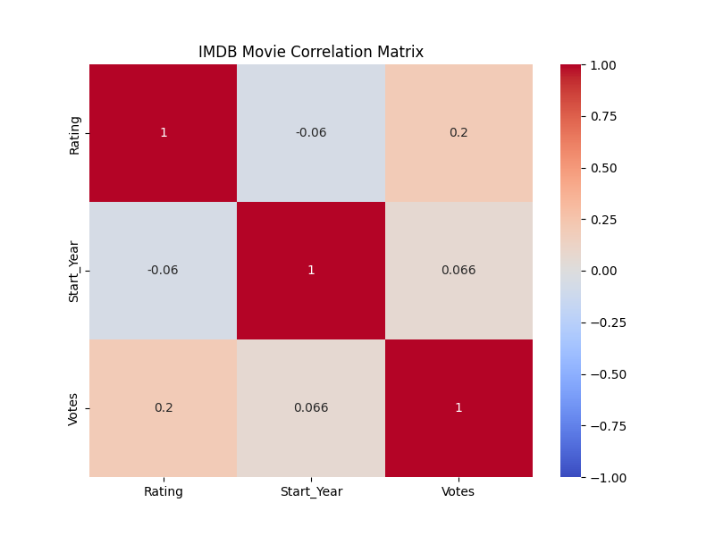
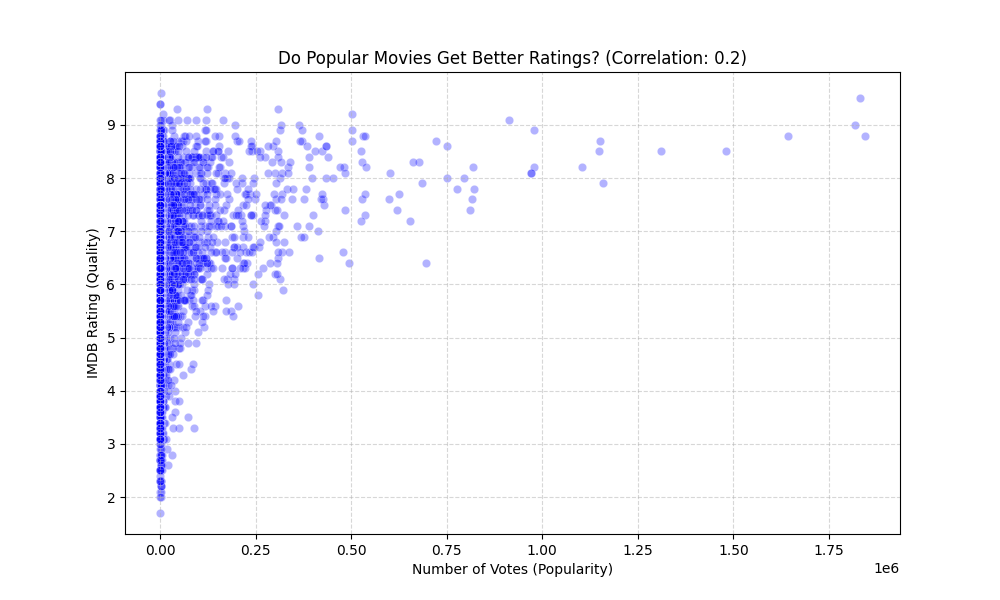

IMDB Analytics: Popularity vs. Quality
A Full-Stack Data Analysis Portfolio Project
📌 Project Overview
Does a massive marketing budget and millions of votes guarantee a high-quality movie? This project investigates the relationship between Popularity (Votes) and Quality (IMDB Rating) by analyzing over 8,000 movie records.
The workflow simulated a real-world data pipeline: auditing raw dirty data, engineering a clean SQL warehouse, building interactive dashboards, and performing statistical hypothesis testing.
🔍 Key Findings
- The Fan Effect: A weak correlation (0.2) proves that popularity does not equal quality.
- The Safe Zone: While high votes don't guarantee a masterpiece, they act as a quality floor. Movies with 1M+ votes rarely drop below a 7.0 rating.
- Quality Decline: Average movie ratings have shown a slight downward trend in the post-2000 digital era.
📸 Visuals & Data Story
1. Statistical Overview (Correlation Matrix)
Generated using Python's Seaborn library, this heatmap shows the mathematical relationship between variables. The dark purple square (0.2) at the intersection of "Votes" and "Rating" was the primary indicator that marketing hype (popularity) has very little connection to actual movie quality.

1. The "Fan Effect" (Python Analysis)
Using Python's Seaborn library, I plotted every movie as a single data point. The resulting "funnel" shape visualizes the variance in quality.

2. Executive Dashboard (Power BI)
An interactive view allowing stakeholders to filter by Genre and Time Period.
⚙️ Technical Methodology
Phase 1: Excel Audit
Used Pivot Tables to prototype logic and identify discrepancies in how "Remakes" were counted vs. the raw CSV.
Phase 2: SQL Engineering
Sanitized data by removing format errors (commas in titles) and hidden line breaks. Validated row counts to ensure 0% data loss during migration.
Phase 3: Power BI
Connected directly to SQL Server. Created DAX measures for Average Rating and binning logic for Decade trends.
Phase 4: Python
Utilized pyodbc to query SQL and seaborn to generate the heatmap and scatter plot visualizations.